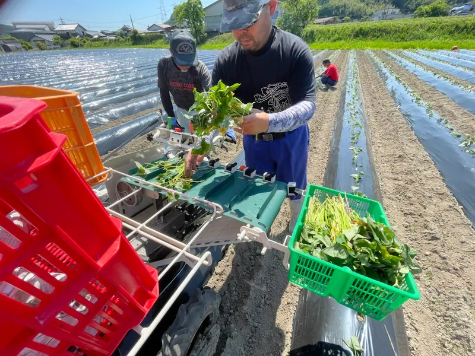
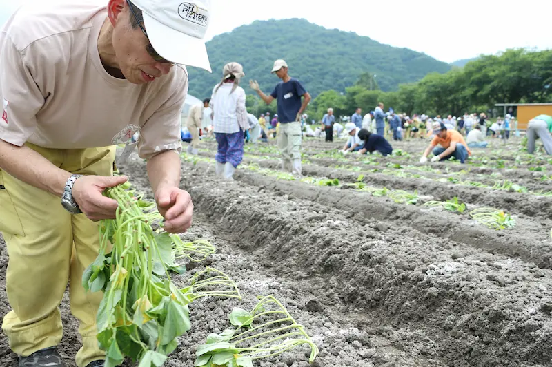
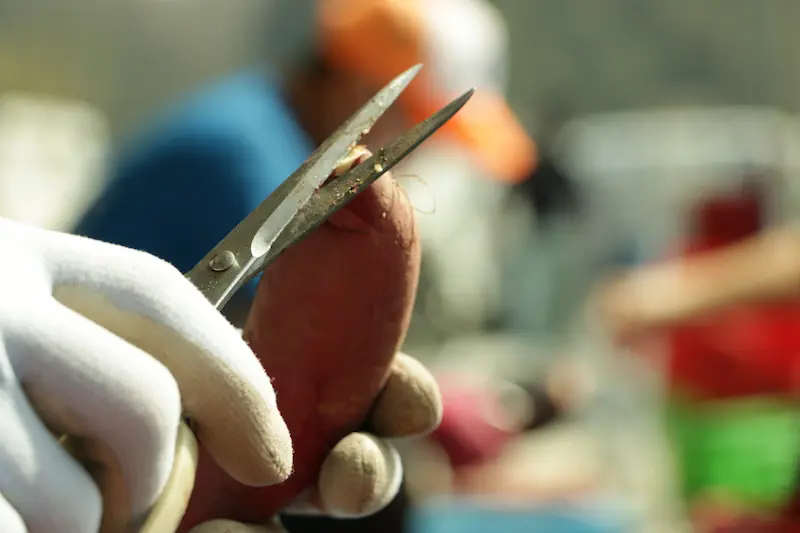

農福連携とは、障害者等が農業分野で活躍することを通じ、自信や生きがいを持って社会参画を実現していく取組です。
農福連携に取り組むことで、障害者等の就労や生きがいづくりの場を生み出すだけでなく、担い手不足や高齢化が進む農業分野において、新たな働き手の確保につながる可能性もあります。 農業と福祉（障害者）の連携という狭い意味で捉えられがちな農福連携ですが、農の向こうには農林水産業や6次産業などがあり、福の向こうには障害者だけでなく、高齢者、生活困窮者、触法障害者など社会的に生きづらさがある多様な人々が包摂されます。
2019年6月に発信された農福連携等推進ビジョンでは、「農福連携を、農業分野における障害者の活躍促進の取組にとどまらず、ユニバーサルな取組として、農業だけでなく様々な産業に分野を広げるとともに、高齢者、生活困窮者、ひきこもりの状態にある者等の就労・社会参画支援、犯罪・ 非行をした者の立ち直り支援等にも対象を広げ、捉え直すことも重要である。」と明記されました。 その後多くの場面で「農福連携」から「農福連携等」と表現されるようになった背景には、農と福のもつ意味の広がりが生み出す新たな価値への期待が込められています。
弊社は、「組織的な人を雇える農業」ひいては障がい者の雇用拡大を目指しています。 障がい者は短期間に連続して異なる業務を行う場合や、マルチタスクとなるとパニックを起こす可能性があるため、長時間同じ作業に従事できることが大切と考え、事業規模を拡大。それにより収益と事業を安定させ、また農作業を細分化・単純化することで、継続的な雇用創出のために尽力しています。またその一環として、新規作物の作付けや支援機関との連係も積極的に行っています。

Copyright MOIMO. All Rights Reserved.